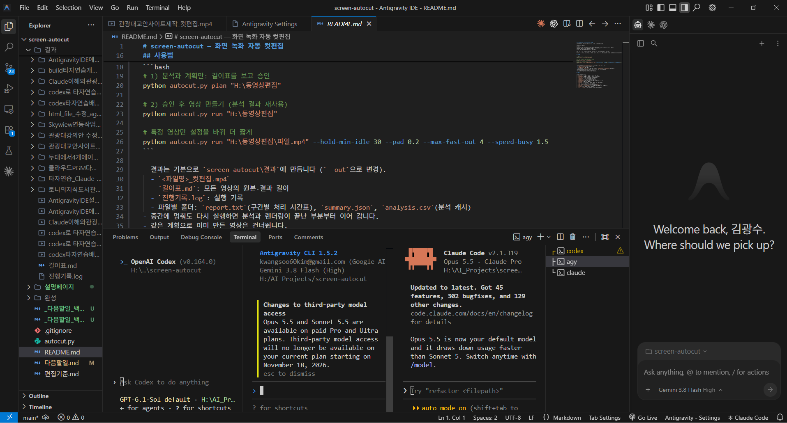

바이브코딩의 첫걸음: 나만의 코딩 Agent 만들기!
2026 제3회 통계아카데미 · 국가데이터인재개발원 제주분원 · 2026년 11월 10일(화) 14:00~16:00
이 화면은 세 층으로 읽습니다
- 장면은 강연에서 말하는 내용을 짧게 줄여 담은 카드
- ▸ 펼쳐 보기를 누르면 장면에 나온 낱말과 개념의 풀이, 관련 영상과 그 설명 페이지, 더 읽을 자료의 링크가 나옴
- 스크립트 읽어보기 →를 누르면 부마다 강연에서 할 말을 풀어 쓴 글이 새 창으로 열림
- 맨 아래 「참고 자료 서가」에는 흩어진 영상과 참고 자료를 한곳에 모음
주소는 tonykks.github.io/vibe-coding-first-steps, 짧은 주소는 is.gd/vibecoding
펼쳐 보기
강연이 끝난 뒤에도 이 주소는 그대로 남아, 언제든 다시 보실 수 있습니다.
화면 오른쪽 위 달 모양 버튼을 누르면 어두운 화면으로 바뀝니다.
오늘은 이 순서로 갑니다
- 오프닝 — 코드는 AI가 읽고, 결과는 내가 읽습니다
- 맡기기에서 책임지기로 — 바이브코딩과 Agentic Engineering
- 웹에서 내 PC로, 그리고 IDE로 — 빠르게 시작하고, 꾸준히 고치고 키우기
- 나만의 코딩 에이전트 — 여섯 자리와 하네스
- 일의 크기만큼 맡긴다 — 사례와 연령분석
- 되새김 — 필요할 때 오케스트레이터가 되려면
- 덧붙임 — 회사 컴퓨터 안에서 AI 쓰기
바이브코딩은 코드를 몰라도 되게 해 주지만, 일을 몰라도 되게 해 주지는 않습니다.
오프닝 — 코드는 AI가 읽고, 결과는 내가 읽습니다
바이브코딩이라는 말이 태어난 자리에서 시작해, 그 말을 만든 사람이 1년 만에 말을 바꾼 이유를 따라갑니다.
어느 주말, 한 전문가의 실험
- 2025년 2월 2일, Andrej Karpathy가 X(옛 트위터)에 올린 짧은 글
- "내가 '바이브코딩'이라 부르는 새로운 코딩이 있다. 느낌(vibe)에 완전히 몸을 맡기고, 기하급수적으로 좋아지는 AI를 그대로 받아들이고, 코드가 있다는 것조차 잊는 코딩이다." 원글 →
- 그는 Cursor를 열어 말로 시키고, 바뀐 코드는 읽지 않은 채 전부 수락, 오류가 나면 메시지를 그대로 복사해 붙여 넣음
- 그러면서도 한 번 쓰고 버릴 주말 프로젝트라면 나쁘지 않다고 스스로 선을 그음
바이브코딩을 처음 말한 사람은, 언제든 코드를 직접 읽고 고칠 수 있는 전문가였습니다.
펼쳐 보기
- Andrej Karpathy
- 안드레이 카파시. OpenAI 창립 멤버, Tesla 자율주행(Autopilot) AI 책임자를 지냈고, 스탠퍼드 딥러닝 강의 CS231n을 만든 사람입니다. 2024년 AI 교육 회사 Eureka Labs를 세웠고, 2026년 5월에는 Anthropic(Claude를 만든 회사)의 사전학습팀에 들어가 다시 연구 현장으로 돌아갔습니다.
- Cursor
- 개발자가 코드를 쓰는 프로그램(IDE)에 AI 비서를 넣은 도구입니다. VS Code를 바탕으로 만들었습니다. 바이브코딩은 이 IDE 안에서 태어났습니다.
- vibe
- 분위기, 느낌, 기운을 뜻하는 영어. 여기서는 하나하나 따지기보다 느낌과 감에 맡긴다는 뜻으로 쓰였습니다.
- 바이브코딩
- 코드 명령어를 하나하나 떠올리는 대신, 만들고 싶은 것을 떠오르는 느낌(vibe)대로 말로 설명하며 코드가 있다는 것조차 잊는 코딩을 말합니다.
- 전부 수락
- AI가 코드를 고치면 무엇이 바뀌었는지 보여 주는 화면이 뜹니다. 보통은 읽고 받아들이는데, 그는 읽지 않고 "Accept All"을 눌렀습니다.
같은 말이, 다른 사람에게는 다르게 들렸습니다
코드를 읽는 사람에게 들린 말
- 귀찮은 일을 대신해 주니 편하다
- 하지만 모르게 짠 코드도 내가 책임진다
- 버리는 주말 프로젝트에나 쓸 만하다
코드를 읽지 못하는 사람에게 들린 말
- 말만 하면 다 만들어 준다
- 결과 화면이 놀랍다
- 나도 이제 프로그램을 만들 수 있다
- 그해 영국 Collins 사전이 고른 2025년 올해의 단어
- 누가 틀린 것이 아니라, 한 사람은 코드를 보고 한 사람은 결과를 봄
전문가는 코드를 보며 반반이라 했고, 코드를 못 보는 사람은 결과에 매료되었습니다.
펼쳐 보기
개발자들 사이에서 바이브코딩은 한동안 "검토도 안 하고 맡기는 코딩"을 꼬집는 말로도 쓰였습니다. 프로그램에 문제가 생기면 "AI가 짰다"는 말은 핑계가 되지 못하기 때문입니다.
- Collins 올해의 단어
- 2025년 11월 6일 발표. 사전은 바이브코딩을 "변수(variables)가 아니라 느낌(vibes)으로 하는 프로그래밍"이라고 소개했습니다.
1년 뒤, 말을 만든 사람이 새 말을 만들었습니다
- 1년 사이 AI 모델이 크게 좋아져, 예전엔 개발 업체에 맡겨야 했던 수준의 일도 말로 시킬 수 있게 됨
- 그의 하루는 코드를 직접 쓰기보다 여러 AI Agent에게 일을 나눠 주고 지휘하고 감독하는 시간. 이런 사람을 오케스트레이터라 부름
- 이름도 "코딩"에서 "엔지니어링"으로 바뀜. 그냥 맡기고 잊는 데서 설계하고, 맡기고, 확인하고, 책임지는 쪽으로 옮겨 감
말로 시키는 '바이브'는 그대로입니다. 여러 AI Agent에게 역할을 나눠 맡기고, 사람이 설계하고 확인하고 책임지는 쪽으로 넓어진 것을 그는 Agentic Engineering이라 불렀습니다.
펼쳐 보기
- agent
- 나를 대신해 일하는 사람입니다. 운동선수의 에이전트가 협상과 계약을 챙겨도 서명은 선수 본인이 하듯, 일은 맡기고 결정은 맡긴 사람이 합니다.
- agentic
- agent에 '~의 성질을 띤'(-ic)이 붙은 형용사로, '스스로 일을 맡아 해내는'이라는 뜻입니다.
- AI Agent
- 목표를 받아 도구를 쓰며 일을 해내는 AI, 곧 AI 대리인입니다.
- Agentic Engineering
- engineering은 '공학', 곧 원리와 기준에 따라 설계하고 시험해 믿고 쓸 수 있는 것을 만드는 일입니다. Agentic Engineering은 스스로 일하는 성질을 띤 AI Agent를 활용해, 사람이 설계하고 확인하고 책임지는 engineering입니다.
- 오케스트레이터(orchestrator)
- 관현악단(orchestra)의 여러 악기를 맞추는 지휘자처럼, 여러 AI가 언제 무엇을 맡을지 정하고 전체가 조화를 이루는지 보는 사람입니다. -or는 '그 일을 하는 사람'을 뜻합니다.
그런데 그것은 누구의 평가였을까요
"AI에게 맡기니 사람이 짤 때보다 낫더라."라는 평가를 내린 사람은 코드를 누구보다 잘 읽는 사람
| 결과를 검증할 수 있는 사람 | 결과를 검증할 수 없는 사람 | |
|---|---|---|
| AI가 잘했을 때 | 바로 씀, 시간이 크게 줄어듦 | 잘된 것인지 모른 채 씀 |
| AI가 틀렸을 때 | 틀린 곳을 찾아 고치게 함 | 틀린 줄 모르고 씀 |
| 결과적으로 | 효율이 배가됨 | 결과를 장담할 수 없음 |
AI가 일을 잘하게 된 것이 아니라, 검증할 수 있는 사람의 손에서 AI가 일을 잘하게 된 것입니다.
펼쳐 보기
- 검증
- 만들어진 결과가 맞는지 확인하는 일. 코드 전문가는 코드를 읽어서, 코드를 모르는 사람은 결과를 시험해서 검증합니다.
그 자리에 코드 전문가 대신 여러분을 넣어 보십시오
- AI가 쓴 안내문에서 틀린 규정·조건을 바로 찾아내는 사람
- 매출·예산 집계표를 보고 "이 합계는 이상한데" 하고 몇 초 만에 알아차리는 사람
- 그 순간 여러분은 결과물의 검증자. 코드는 한 줄도 몰라도 됨
- AI가 기안을 올리면 여러분이 꼼꼼히 살핀 뒤 결재하듯, 코드를 들여다보는 대신 결과가 제대로 나오는지 시험해 본 뒤 받아들임
| Karpathy의 자리 | 여러분의 자리 |
|---|---|
| 코드를 읽고 맞는지 판단 | AI가 만든 결과물을 써 보고, 내가 요구한 대로 나왔는지 판단 |
| 틀린 코드를 짚어 고치게 함 | 시험해 보며 찾은 오류를 짚어 고치게 함 |
| 여러 Agent를 지휘 | 대표 Agent에게 요구사항을 말하고, 기획·코딩·검증을 각 Agent의 능력에 맞게 나눠 맡기게 함 |
| 코드를 알기에, 맡겨도 품질을 지키며 더 많이 만듦 | 업무를 알기에, 되풀이하는 업무는 에이전트에게 맡기고 더 나은 업무에 힘을 쏟음 |
코드 전문가가 코드를 알아서 에이전트를 부렸듯, 업무 전문가는 업무를 알아서 에이전트를 부릴 수 있습니다.
펼쳐 보기
코드를 모르는 사람에게 가장 확실한 검증 통로는, 결과가 어떻게 나와야 하는지 알고 그것을 꼼꼼히 시험해 보는 능력입니다. 숫자를 넣어 보고, 예외 경우를 넣어 보고, 실제 자료로 돌려 봅니다.
내용을 모르고 도장만 찍으면 책임은 남는데 판단은 없는 결재가 됩니다.
스크립트 읽어보기 →먼저 사라진 자리를 보면 이유가 보입니다
- 2025년 7월 Stanford 연구에 따르면 22~25세 소프트웨어 개발자 고용은 2022년 정점보다 약 20% 줄었고, 경력자는 유지되거나 늘어남
- 원인은 금리·과잉 채용과 AI가 겹친 것. AI가 유일한 원인이라는 결론은 아직 아님
- "사이드바 여백을 절반으로" 같은 일은 신입이 맡던 일인데, 신입은 아직 검증할 경험이 쌓이지 않은 사람
- AWS CEO Matt Garman은 주니어를 AI로 대체하는 것을 "가장 어리석은 생각"이라 함. 10년 뒤 경험 있는 사람이 남지 않기 때문
AI가 먼저 대신한 것은 시키는 일을 해내는 능력이고, 아직 대신하지 못하는 것은 결과를 판단하는 경험입니다.
펼쳐 보기
2022년 제로 금리가 끝나고 팬데믹 때 과하게 뽑은 인원을 줄이면서 채용 문이 먼저 닫혔습니다. 그 뒤 경력자 채용은 회복되었는데 신입 채용만 돌아오지 않았다는 점에서 AI의 영향을 보는 분석이 나옵니다. 반론도 있습니다.
스크립트 읽어보기 →AI는 우리가 배울 기회까지 가져갈 수 있습니다
- 예전에는 일하면서 저절로 배웠지만, 이제는 AI가 먼저 해 주니 배울 기회가 줄어듦
- AI가 대신하는 것은 책으로 배우는 지식, 대신하기 어려운 것은 경험으로 쌓인 암묵지
- 장하석 교수는 최재천 교수와의 대담(2026년 10월)에서 계산기를 써도 계산 원리는 알아야 한다며, AI는 조수이고 판단과 책임은 사람에게 있다고 함
사람이 꼭 해야 할 세 가지
- 무엇을 시킬지 내 말로 정하기
- 결과가 어떻게 나와야 하는지 기준 세우기
- 결과를 실제로 시험해 확인하기
AI에게 코딩을 맡길 업무
- 절차가 정해져 있고 자주 되풀이되는 일
- 같은 내용을 여러 양식에 옮겨 적는 일
- 두 자료를 대조해 틀린 곳을 찾는 일
- AI와 함께 그동안 하고 싶었던 일
모르면서 결과를 받는 사람은 AI의 사용자에 머물고, 알고 시키는 사람은 AI를 지휘하는 사람이 됩니다.
펼쳐 보기
- 암묵지(暗默知)
- 말이나 글로 옮기기 어려운, 경험으로 몸에 쌓인 요령. "이 숫자는 이상하다"는 감이 대표적입니다.
- 장하석
- 케임브리지대 과학철학 교수. 대담에서 AI에 너무 의존하면 사람이 하는 경험을 빼앗긴다고 했고, AI가 잘하는 것은 맡기되 사람이 경험해야 할 최소한을 찾으라고 했습니다.
코드를 못 쓰는 저는 바이브코딩으로 이렇게 만듭니다
- 지금도 코드를 쓰지 못함. 1~10월 교육은 대부분 코드를 직접 치는 프로그래머용이었음
- 과정 목차를 AI에게 붙여 넣고 "바이브코더가 무엇을 알았어야 했는지"만 물어 핵심 용어를 익힘
- 장하석 교수의 테니스 이야기처럼, 그 열 달 동안 공은 제대로 못 쳐도 경기를 보는 눈이 생김
- 외국인 유학생 수업에 쓸 한글타자연습 웹페이지를 Codex로 만들기(모두 약 2시간 30분)
- 첫 번째 완성까지 약 14분
- 써 보며 찾은 문제를 캡처해 보여 주고 설명하며 고치기 약 1시간 10분
- 로그인과 순위표를 더하고 배포해 최종 테스트하기까지 약 1시간 10분
AI가 만드는 시간은 짧고, 시험하고 고치는 시간은 몇 배 깁니다. 그 시간은 무엇을 만들고 무엇을 시험할지 아는 사람의 몫입니다.
펼쳐 보기
- 자동 테스트
- AI가 짠 작은 확인 프로그램. 계산이 맞는지는 보지만, 화면이 제대로 보이는지는 사람이 열어 봐야 알 때가 많습니다. 테스트를 통과했는데 열어 보니 화면이 비어 있던 이 장면이 그 예입니다.
- 복사해 붙여 넣기
- 부끄러운 일이 아닙니다. Karpathy도 첫 글에서 자기가 하는 일을 "보고, 말하고, 실행하고, 복사해 붙여 넣는 것"이라고 했습니다.
실제 녹화 기록입니다. Codex가 처음 만드는 데 약 14분, 써 보며 고치기 약 1시간 10분, 로그인과 순위표 같은 추가 구현에 약 40분, 배포와 최종 테스트에 약 30분. 모두 약 2시간 30분에 걸쳐 한글타자연습앱을 Codex로 만들었습니다.
스크립트 읽어보기 →작아도 좋으니, 내 일 하나를 끝까지
- 고를 일은 내가 가장 잘 아는 업무, 결과가 맞는지 가장 빨리 알아볼 수 있는 일
- 첫 단계는 채팅창에서 웹에서 돌아가는 것 하나를 만들어 보기. 처음부터 모든 기능을 넣지 말고 원하는 화면 하나부터
- 끝까지는 AI가 처음 만든 것을 받는 데서 멈추지 않고, 요구사항대로 될 때까지 시험하고 고치는 것
- 그렇게 끝까지 가면 요구사항, 내 업무 규칙이 담긴 프로그램, 결과를 시험하는 눈이 남음
이 강연에서 말하는 바이브코딩은 업무를 아는 내가 무엇을 시킬지 정하고, AI가 만든 결과를 직접 시험해 확인하며, 요구사항대로 될 때까지 고쳐 내 일을 끝까지 해내는 방식
펼쳐 보기
여러분이 가장 잘 아는 업무 하나, 결과가 맞는지 가장 빨리 알아볼 수 있는 일을 고르십시오. 첫 단계는 채팅창에서 바이브코딩으로 웹에서 돌아가는 것을 만들어 보는 것입니다. 써 보고 고치기를 되풀이하며 원하는 대로 될 때까지 계속 만들어 봅니다. 데이터를 쌓아 두는 일과 다른 사람이 쓸 수 있게 배포하는 일은 그다음에 하나씩 익히면 됩니다. 모르는 것이 나오면 복사해 붙여 넣는 연습이라 생각하면 됩니다.
스크립트 읽어보기 →맡기기에서 책임지기로 — 바이브코딩과 Agentic Engineering
만든 사람이 1년 만에 새 이름을 꺼낸 까닭을 AI가 할 수 있는 일이 달라진 흐름 위에서 보고, 그 흐름 위에 오늘 우리가 갈 길을 겹쳐 봅니다.
답을 알려 주는 AI에서, 실제 일을 하는 AI로
| 단계 | AI가 하는 일 | 제주 여행 예시 |
|---|---|---|
| ① 대화형 | 묻고 답하기 | "2박 3일 일정 짜 줘" → 일정표 |
| ② 추론형 | 조건을 따져 계획 세우기 | 예산 50만 원, 동행자 나이, 이동 수단까지 비교해 계획 |
| ③ 에이전틱 | 도구를 써서 실제로 일하기 | 항공·숙소를 검색·비교하고, 승인을 받아 예약까지 |
- 공식 시대 구분이 아니라 이해를 돕기 위한 구분. 지금도 셋이 함께 쓰임
- 지금까지는 남이 차려 놓은 밥상(AI 서비스)을 먹었다면, 이제는 내 일에 맞는 요리를 직접 만들 수 있음
여러분은 지금 AI를 어느 단계까지 쓰고 계십니까?
펼쳐 보기
- 대화형 AI
- Conversational AI. 2022년 11월 30일 ChatGPT 공개로 일반인의 일상에 들어왔습니다.
- 추론형 AI
- Reasoning AI. 문제를 여러 단계로 나눠 따져 보고 답을 내는 능력이 강해진 AI입니다.
- 에이전틱 AI
- Agentic AI. 1부에서 본 agentic, 곧 스스로 일을 맡아 해내는 AI. 목표를 받아 연결된 도구(검색, 파일, 예약 시스템 등)를 쓰며 일을 진행하고 결과를 확인하는 AI입니다. 무엇을 할 수 있는지는 연결된 도구와 권한이 정합니다.
AI가 할 수 있는 일이 달라지자, 사람이 할 일도 달라졌습니다
| 때 | AI는 | 사람이 하는 일 |
|---|---|---|
| 2025년 2월 | 말로 시키면 코드는 나오지만, 고치다 보면 깨짐 | 바이브코딩으로 맡기고 받아들이기, "한 번 쓰고 버릴 주말 프로젝트라면 나쁘지 않다" |
| 2025년 10월 | 카파시는 "코딩 에이전트가 오히려 방해였다"고 함 | 아직 일을 믿고 맡기기 어려움 |
| 2025년 12월 | 카파시는 "프로그래머로서 이렇게 뒤처졌다고 느낀 적이 없다"고 함 | 에이전트가 실제로 일을 해내기 시작 |
| 2026년 2월 | 여러 에이전트가 나눠서 일함 | Agentic Engineering으로 지휘하고 감독하기 |
- 10월에서 12월, 두 달 사이에 코딩 에이전트가 실제로 일을 해내기 시작함. 3단계 가운데 에이전틱 단계에 올라선 것
- 그래서 1년 만에 새 이름이 필요해졌음. 사람의 자리도 맡기고 받아들이기에서 지휘하고 감독하기로 올라감
바이브코딩이 틀렸던 것이 아니라, AI가 한 계단 오르자 사람의 자리도 한 계단 올라간 것입니다.
펼쳐 보기
2025년 10월 카파시는 자기 프로젝트(nanochat)에서 Claude Code·Codex 같은 코딩 에이전트가 "순수익으로 보면 도움이 안 됐다"고 했습니다. 두 달 뒤 12월에는 지금 배워야 할 것으로 에이전트, 서브에이전트, 프롬프트, 메모리, 권한, 도구를 꼽았습니다. 두 달 사이에 무엇인가가 넘어간 것입니다.
- 코딩 에이전트
- 코드를 쓰고 고치고 실행해 확인하는 일을 맡는 AI. Claude Code, Codex, Antigravity의 Agent가 대표적입니다.
세 단계는 오늘 우리가 걸어갈 길이기도 합니다
- 첫걸음은 대화형 AI, 곧 채팅창에서 말로 시켜 웹에서 돌아가는 것을 만들어 보기 (3부 앞부분)
- 고치고 키울 일이 생기면 내 컴퓨터의 데스크톱 앱으로 옮겨, AI가 내 폴더의 파일을 직접 고치게 함 (3부 뒷부분)
- 일이 더 커지면 IDE에 여러 에이전트를 앉히고 역할을 나눠 맡김. 카파시가 말한 Agentic Engineering의 자리 (4부)
- 어느 계단에서든 말로 시키는 바이브는 같고, 결과를 시험하고 책임지는 것은 업무를 아는 사람
- 기술은 갈수록 쉬워짐. 쫓아가기보다 내 업무의 암묵지를 쌓는 사람이 그 기술을 가장 잘 씀
바이브코더인 우리가 바이브코딩으로 Agentic Engineering까지 가는 길, 그 첫걸음에 지금 서 있습니다.
먼저 첫 계단, 채팅창에서 시작한 바이브코딩부터 보겠습니다. → 3부
펼쳐 보기
AI 활용 3단계와 오늘의 길은 이렇게 겹칩니다. 채팅창에서 묻고 시키는 것은 대화형·추론형 AI를 쓰는 일입니다. 데스크톱 앱과 IDE의 코딩 에이전트는 내 폴더의 파일을 읽고, 고치고, 실행해 확인합니다. 도구를 쥐고 실제로 일하는 에이전틱 AI입니다.
모든 일을 맨 위 계단에서 할 필요는 없습니다. 일의 크기에 맞는 계단에서 하면 됩니다. 어느 계단을 고를지는 6부에서 다시 정리합니다.
스크립트 읽어보기 →바이브코딩으로 만들기 — 웹에서, 그리고 내 컴퓨터에서
2부에서 본 첫째와 둘째 계단입니다. 늘 쓰던 채팅창에서 시작해 웹의 한계를 겪어 보고, 데스크톱 앱으로 내 폴더에서 고치는 길을 실제 기록으로 따라갑니다.
"10분 타이머 만들어 줘" — 채팅창에서 한 문장이면 시작됩니다
- 늘 쓰던 일반 채팅창에서 말로 시켜도 타이머를 만들어 줌
- 써 보면서 새 요구가 계속 생기니, 작게 만들고 써 보고 고치기를 되풀이하는 것이 반복 개발
- 그런데 배경음악을 넣었더니 일시정지가 고장 나고, 그걸 고쳤더니 알림음이 사라짐. 이렇게 멀쩡하던 기능이 고장 나는 것이 회귀 결함
- 그래서 "만들어 줘"에서 "기존 기능은 그대로 두고 고쳐 줘, 고친 뒤 모두 검사해 줘"로 말이 바뀜
시연 영상 자리. 채팅창에서 타이머를 만들고 고쳐 가는 장면(새 녹화 앞부분)
프로그램을 만드는 것과, 원하는 프로그램을 제대로 완성하는 것은 다른 문제입니다.
펼쳐 보기
캔버스처럼 더 잘 만들어 주는 기능도 있지만, 여기서는 일부러 늘 쓰던 일반 채팅창으로 합니다. 오늘 처음 바이브코딩을 해 보는 분도 지금 쓰고 있는 그 창에서 바로 따라 할 수 있기 때문입니다.
- 반복 개발
- Iterative Development. 처음부터 모든 요구를 알 수 없으니, 작게 만들어 써 보고 문제를 찾아 고치기를 되풀이하는 방식입니다.
- 회귀 결함
- Regression. 새것을 고쳤는데 멀쩡하던 옛 기능이 고장 나는 일. 기능들이 같은 정보(예: 남은 시간)를 함께 쓰기 때문에 생깁니다. 사람이 짤 때도 생기지만, AI는 한 번에 많이 고치니 확인하지 않으면 늦게 발견합니다.
- 테스트
- 시작·일시정지·재시작·종료 알림처럼 기능 하나하나가 제대로 되는지 확인하는 일입니다.
세 회사는 웹에서 바이브코딩을 이렇게 차려 놓았습니다
| 회사 | 쉬운 것 | 좀 더 복잡한 것 |
|---|---|---|
| OpenAI | ChatGPT 채팅창 | 코딩 전용 Codex |
| Anthropic | Claude 채팅창 | 코딩 전용 Claude Code |
| Gemini 채팅창 하나가 쉬운 것부터 알아서 | 따로 AI Studio. Playground로 파일 한 장 맛보기, Build Mode로 여러 파일짜리 앱 |
- 써 보면 ChatGPT와 Claude는 쉬운 것은 채팅창, 복잡한 것은 코딩 전용 창으로 나뉘어 있음
- Gemini는 한 채팅창에서 알아서 하고, 더 전문적인 일은 AI Studio에서 하게 함
- AI Studio Build Mode는 여러 파일로 나뉜 앱의 코드를 웹에서 다 보여 줌
어느 회사든 웹에서 바로 시작할 수 있습니다. 문제는 고치고 키울 때 드러납니다.
펼쳐 보기
- AI Studio
- 구글이 웹으로 제공하는 AI 개발 도구. Playground는 모델에 말을 걸어 시험하는 곳으로, 만든 것을 HTML 파일 한 장으로 내려받아 쓸 수 있습니다. Build Mode는 말로 여러 파일짜리 앱을 만들고 주소까지 만들어 주는 기능입니다.
- Codex와 Claude Code
- OpenAI와 Anthropic의 코딩 에이전트. 코드를 쓰고, 고치고, 실행해 확인하는 일을 맡습니다. 웹에서도 쓰고, 05에서 볼 데스크톱 앱에서도 씁니다.
웹에서는 두뇌도, 손발도, 작업 공간도 모두 클라우드에 있습니다
두뇌는 AI 모델(LLM)
인터넷 너머 회사의 컴퓨터(클라우드)에서 생각함
손발은 도구
파일 만들기, 실행하기. 웹에서는 이것도 서비스 회사의 클라우드에 있음
작업 공간은 클라우드 안
결과물도 서비스 안의 가상 공간에 만들어짐
- 내가 보는 것은 결과 화면과 코드뿐, 파일은 서비스 안에 있음
- 그래서 고치려면 다시 말로 시키고, AI는 클라우드 안에서 다시 만들어 보여 줌
웹에서는 내가 말하고, AI가 클라우드 안에서 만듭니다. 내 컴퓨터에는 아직 아무것도 없습니다.
펼쳐 보기
- LLM
- 대규모 언어 모델(Large Language Model). 글과 코드를 만들어 내는 AI 모델 자체입니다.
- 클라우드
- 내 책상 위 컴퓨터가 아니라 인터넷으로 연결된 서비스 회사의 컴퓨터를 빌려 쓰는 것입니다.
- 도구
- AI 모델이 직접 파일을 만들거나 프로그램을 실행하는 것은 아닙니다. 모델이 판단하면, 서비스에 연결된 도구가 파일을 만들고 실행합니다. 모델과 도구는 따로입니다.
고칠 때마다 전체를 다시 쓰면, 수정이 쌓일수록 벽에 부딪힙니다
- 두 줄만 고쳐 달라 해도 파일 전체를 통째로 다시 쓰다가 이전 조건이 빠짐
- 웹 속 AI는 내 파일에 닿지 못해 내 컴퓨터의 음악·이미지를 다루기 어려움
- 미리보기와 배포는 달라서 미리보기에서 되던 앱이 배포하면 멈춤(음악 버튼 먹통, 로그인 창 0.1초)
- GitHub 배포 설정, Firebase 승인 도메인 같은 코드 밖 설정은 웹 속 AI가 못 만짐
- 대화가 길어질수록 AI가 읽을 토큰과 맥락이 늘어 비용이 늘고 앞의 조건을 놓침
전체 다시 쓰기
전구 하나 갈려고 집 전체 배선을 다시 깔기
차이만 고치기(Diff Patch)
나간 전구 하나만 갈기. 내 컴퓨터의 파일이면 AI가 필요한 줄만 고침
시연 영상 자리. 채팅창에서 고쳐 달라고 할 때마다 코드 전체가 다시 나오는 장면(새 녹화 앞부분)
고칠 것은 한 줄인데 매번 전체를 다시 쓰면, 시간과 토큰이 그만큼 듭니다.
왜 웹에서 내 PC로 옮겨 가는가 — 채팅에서 IDE로 →펼쳐 보기
- 토큰
- AI가 글을 읽고 쓰는 처리 단위. 사용량과 비용이 이 단위로 계산됩니다.
- 맥락(Context)
- AI가 지금 작업을 이해하는 데 쓰는 앞의 대화와 정보. 한 번에 읽을 수 있는 양(컨텍스트 윈도우)에 한계가 있습니다.
- 승인 도메인
- Firebase가 "이 주소에서 온 로그인만 받는다"고 정해 둔 목록. 코드가 아니라 Firebase 관리 화면에서 사람이 등록합니다.
내 컴퓨터의 데스크톱 앱으로 옮기면, 필요한 줄만 고칩니다
두뇌는 그대로 클라우드
생각하는 AI 모델은 여전히 회사의 컴퓨터에 있음
손발은 내 컴퓨터의 앱 안
파일 읽기·쓰기, 명령 실행
작업 공간은 내 폴더
내가 허락한 폴더 안에서만 일함
- ChatGPT 앱의 Codex, Claude 앱의 Code 탭(Claude Code). 웹과 같은 채팅창 모양이라 낯설지 않음
- AI가 내 폴더의 파일을 직접 읽고, 필요한 줄만 고치고, 실행해 확인함
- 설치하다 막히면 화면을 캡처해 아무 채팅창에 보여 주며 안내해 달라고 하면 됨
시연 영상 자리. 이미 설치된 데스크톱 앱에서 같은 타이머의 필요한 줄만 고치는 장면(새 녹화 뒷부분)
웹은 가능성을 열어 주고, 내 컴퓨터는 통제권을 줍니다.
펼쳐 보기
- 데스크톱 앱
- 내 컴퓨터에 설치해 쓰는 AI 앱. Claude 앱의 Code 탭(Claude Code), ChatGPT 앱의 Codex처럼, 내가 허락한 폴더의 파일을 직접 읽고 고치고 실행합니다.
AI가 내 컴퓨터에서 일한다고 두뇌까지 내 컴퓨터에 있는 것은 아닙니다. 두뇌까지 내 컴퓨터로 들여오는 방법은 5부에서 봅니다.
제 경험: Claude Code에게 한 번 승인했더니 Firebase 로그인과 데이터베이스 설정을 숨 돌릴 틈 없이 끝냈습니다. 그 능력은 정말 상상을 넘었습니다.
스크립트 읽어보기 →망가져도 어제로 돌아갈 수 있게 — Git과 GitHub
- 망가지면 어제 상태로 되돌릴 수 있게 기록해 두는 것이 Git, 그 기록을 온라인에 두는 곳이 GitHub
- "강의자료_최종, 강의자료_진짜최종"처럼 이름을 바꿔 보관하던 일을 자동으로 해 줌
- GitHub에 올린 것은 GitHub Pages로 주소 하나에 내놓을 수도 있음
- 명령어는 몰라도 됨. "지금 상태를 저장해 줘", "어제 상태로 되돌려 줘"라고 말하면 에이전트가 함
AI에게 많이 맡길수록, 되돌릴 수 있는 기록이 먼저입니다.
펼쳐 보기
- Git과 GitHub
- 바뀐 내용을 기록해 두는 것이 Git, 그 기록을 온라인에 저장하고 함께 일하게 해 주는 서비스가 GitHub입니다. 둘은 같은 것이 아닙니다.
- 배포
- 내 컴퓨터에서만 열리던 것을 주소 하나로 누구나 열 수 있게 내놓는 일입니다.
같은 요구, 세 가지 길 — 한글타자연습앱
| ① AI Studio Build Mode | ② Playground → Claude Code | ③ Codex | |
|---|---|---|---|
| 출발점 | 요구사항 파일 하나 | Playground에서 받은 HTML 파일 한 장 | 시작 프롬프트와 빈 폴더 |
| 일한 곳 | 웹 브라우저 안 | 내 컴퓨터(Claude 데스크톱 앱) | 내 컴퓨터(Codex 데스크톱 앱) |
| AI가 한 일 | 파일 나누기, 로그인·DB 연결, 자동 배포 | 기능별 파일로 나누기, GitHub·Firebase 설정 | 계획·구현·자동 테스트, Firebase, 배포 |
| 사람 몫 | GitHub 저장소 만들기·올리기(보안상 막힘) | 계정 로그인 | 써 보며 찾은 문제 알려 주기, 점수 방식 정하기, 로그인 |
셋 다 해냈습니다. 차이는 고치고 키울 때 드러납니다.
펼쳐 보기
- Firebase
- 구글의 앱 뒷단 서비스. 이 앱에서는 Google 계정 로그인(Authentication)과 학생 기록 저장소(Firestore)로 썼습니다.
- 데이터베이스(DB)
- 학생 기록처럼 쌓이는 자료를 모아 두는 저장소입니다. 어느 컴퓨터에서 열어도 같은 기록이 보입니다.
- GitHub Pages
- GitHub에 올린 파일을 웹사이트로 바로 보여 주는 무료 서비스입니다.
②는 Playground에서 받은 HTML 한 장을 내 컴퓨터로 가져와, Claude Code가 기능별 파일로 나누는 데서 시작합니다. 웹에서 맛본 것을 내 컴퓨터에서 키우는 길이 그대로 담겨 있습니다.
세 편은 같은 조건에서 겨룬 시험이 아니라, 같은 요구에서 출발해 도구마다 사람과 AI가 한 일을 나란히 본 기록입니다.
스크립트 읽어보기 →데스크톱 앱 하나로 이런 것까지 만들었습니다
- 셋 다 만드는 AI는 하나, 시험하고 고칠 곳을 알려 준 것은 사람
- 어느 것이든 마지막 확인은 그것을 쓸 사람이 함
일이 이만한 크기라면, 에이전트 하나와 데스크톱 앱 하나로 충분합니다.
그런데 일이 더 커지면, 에이전트 하나로 충분할까요? → 4부
펼쳐 보기
- 자동 컷편집
- 0.5초마다 화면이 얼마나 바뀌는지 재서 구간마다 처리를 정합니다. 3초 넘게 멈춘 곳은 자르고, AI가 생각하는 동안은 12배속, 글자 출력은 4배속으로 넘깁니다. 먼저 길이표를 보고 승인한 뒤 만듭니다.
- ffmpeg
- 영상과 소리를 자르고 붙이고 바꾸는 무료 프로그램. 컷편집의 무거운 일은 이것이 합니다.
- TTS
- 글을 읽어 주는 음성 합성(Text To Speech). 자막을 무료 남성 음성으로 읽혀 나레이션을 만들었습니다.
영상 편집에서 사람이 한 일은 녹화, 컷편집 계획 승인, 장면 확인, 목소리 고르기, 제목·배경음악·썸네일, 공개 여부 판단이었습니다.
스크립트 읽어보기 →여러 에이전트로 — 나만의 코딩 에이전트
2부에서 본 셋째 계단이자 강연 제목의 답입니다. 에이전트 하나에서 여럿으로 넓혀 서로 검토하게 하고, 역할을 나눠 맡기고, 사람이 기준을 정하고 마지막에 확인하는 길을 봅니다.
혼자 쓰고 혼자 검토하면 놓칩니다
- 3부의 데스크톱 앱은 에이전트 하나. 만든 AI가 스스로 검토까지 함
- 중요한 보고서를 다른 사람에게 읽어 봐 달라고 하듯, 만드는 쪽과 보는 쪽을 나눔
- 첫걸음은 둘로. 대화창의 Claude가 요구사항과 원고를 쓰고, Code 탭의 Claude가 파일을 고쳐 검사하고 보고함
- 사람은 무엇부터 할지 정하고, 보고서를 읽고 승인함
만드는 일과 보는 일을 둘로 나누는 데서, 여러 에이전트가 시작됩니다.
펼쳐 보기
Claude 데스크톱 앱의 두 탭은 같은 Claude처럼 보여도 일하는 곳이 다릅니다. Claude 탭은 클라우드에서 일하며, 연결한 폴더를 들여다볼 수는 있지만 내 컴퓨터에서 명령을 실행하지는 못합니다. Code 탭은 내 컴퓨터 안에서 파일을 읽고 쓰고 실행까지 합니다. 그래서 생각과 문서는 Claude 탭에, 파일을 고치고 확인하는 일은 Code 탭에 맡기면 자연스럽게 둘로 나뉩니다.
둘로 나눠도 두 에이전트는 서로 직접 말하지 못합니다. 처음에는 사람이 그 사이를 전하고, 08에서 볼 하네스가 그 전달을 파일로 바꿉니다.
스크립트 읽어보기 →IDE는 이미 아는 프로그램 넷을 한곳에 모은 것입니다
| IDE 화면 | 이미 아는 것 | 하는 일 |
|---|---|---|
| 왼쪽 | 파일 탐색기 | 프로젝트의 폴더와 파일 보기 |
| 가운데 | 메모장 | 파일(소스코드) 열어 보기·고치기 |
| 옆 대화창 | ChatGPT 채팅창 | AI 코딩 에이전트에게 우리말로 시키기 |
| 아래 | 명령 프롬프트 | 터미널에서 문자로 명령을 내리고 결과 보기 |
- 실제로 쓰는 것은 채팅창 하나. 나머지는 에이전트가 일하는 모습을 보는 곳
- AI가 어느 폴더에 어떤 파일을 만들고 고치는지 눈으로 볼 수 있음
- 요즘 IDE는 안에 AI 대화창을 품음. VS Code에는 Copilot, Cursor에는 자체 AI, Antigravity에는 Gemini 기반 기본 에이전트
- 다른 회사의 에이전트도 확장으로 설치하면, 한 화면에 여럿이 함께 앉음
IDE는 작업 현장
설계도·자재·도구가 있는 건축 현장
코딩 에이전트는 작업자
현장에서 설계하고 시공하고 검사하는 사람들
IDE가 작업 현장이라면, 코딩 에이전트는 그 현장에서 일하는 작업자입니다.
펼쳐 보기
- IDE
- 통합 개발 환경(Integrated Development Environment). 프로그램을 만들고 파일을 관리하고 실행하고 오류를 보는 도구를 한곳에 모은 작업 공간입니다. VS Code, Cursor, Antigravity가 그 예입니다.
- Antigravity IDE
- 구글이 내놓은 AI 에이전트 중심 IDE. 내 컴퓨터에 설치해 쓰고, 기본 AI 에이전트가 들어 있습니다.
- VS Code와 Visual Studio
- 이름만 닮았습니다. Visual Studio는 Microsoft의 큰 유료 개발 도구(1997~)입니다. VS Code는 2015년 무료로 내놓은 가벼운 편집기로, Visual Studio의 기능을 덜어 낸 것이 아니라 웹 브라우저에서 돌던 편집기(Monaco)를 데스크톱 앱으로 옮긴 프로그램입니다. Microsoft가 2018년 GitHub을 사들인 뒤, 2026년 무렵부터 VS Code를 새로 설치하면 GitHub의 AI인 Copilot 대화창이 기본으로 들어 있습니다. GitHub 계정으로 로그인하면 쓸 수 있고, 원하지 않으면 끌 수 있습니다.
- 터미널
- 문자로 명령을 입력하고 결과를 보는 창입니다. Windows의 명령 프롬프트나 PowerShell과 같은 것입니다. 명령어를 외울 필요는 없습니다. 에이전트가 쓰고 실행합니다.
건축 현장이 있다고 집이 저절로 지어지지 않듯, IDE를 설치했다고 프로그램이 만들어지지 않습니다. 일하는 작업자와, 그들에게 일을 나눠 주는 사람이 필요합니다.
제 경험: 같은 Firebase 작업을 Antigravity에서 했을 때는 에이전트가 "이 부분은 직접 하셔야 합니다"라고 안내해 하나씩 해 보았습니다. 번거로웠지만 일이 어떻게 돌아가는지 몸으로 알게 되었습니다. 데스크톱 앱의 Claude Code는 편리함을, IDE는 배움의 기회를 주었습니다.
스크립트 읽어보기 →다른 회사의 에이전트에게 검토를 맡기면 무엇이 달라질까요
- 결과물이 내 폴더에 있으니, 다른 회사의 에이전트도 같은 파일을 읽을 수 있음
- 처음 요구사항을 함께 읽게 하면 코드의 실수뿐 아니라 요구한 대로 만들었는지까지 봄
- 대부분 더 나은 대안이 하나 이상 나오고, 만든 쪽도 맞는 지적이라고 인정하는 부분이 나옴
- 만든 쪽이 반대하는 지적도 있음. 두 의견을 나란히 놓고 사람이 고름
에이전트 하나보다, 역할을 나눈 여럿이 더 나은 결과를 만듭니다.
펼쳐 보기
- 교차 검토
- 한 AI가 만든 결과를 다른 AI가 독립된 눈으로 다시 보는 것입니다. 사람의 일에서 작성자와 검토자를 다른 사람으로 두는 것과 같은 까닭입니다. 같은 회사의 AI끼리는 놓치는 곳이 겹치기 쉬워, 다른 회사의 AI를 검토자로 앉히면 다른 곳이 보입니다.
이렇게 말하면 됩니다. 검토를 맡길 때는 "요구사항 파일과 이 코드를 대조해서 문제와 더 나은 방법을 찾아 줘. 아직 고치지 말고 목록으로만 알려 줘." 만든 쪽에 전할 때는 "다른 에이전트의 검토 의견이야. 하나씩 맞는지 네 의견을 말해 줘."
검토 의견이 많다고 모두 받아들일 필요는 없습니다. 내 요구사항과 내 일에 비추어 고를 것을 고르는 일이 사람의 몫입니다.
스크립트 읽어보기 →같은 AI도 확장과 CLI는 다른 자리입니다
| 확장(Extension) | CLI | |
|---|---|---|
| 일하는 곳 | IDE 안 대화창 | IDE 아래 터미널 |
| 방식 | 화면과 파일 변경을 보며 나와 대화하며 조정 | 정해진 지시와 파일을 기준으로 혼자 실행 |
| 맡기기 좋은 일 | 기획 조정, 중간 검토 | 구현 담당, 검증 담당 |
- 같은 Codex·Claude Code도 대화창(확장)과 터미널(CLI) 두 자리에 앉힐 수 있음
- 지능의 우열이 아니라 일하는 방식이 다르므로, 구현과 검증을 다른 자리에 앉힘
펼쳐 보기
- 확장(Extension)
- 기존 프로그램에 기능을 더하는 부가 프로그램. Chrome에 번역 확장을 설치하듯, IDE에 다른 회사 AI의 확장을 설치하면 그 AI를 IDE 안에서 씁니다.
- CLI
- 명령줄 인터페이스(Command Line Interface). 아이콘을 누르는 대신 문자로 명령해 프로그램을 쓰는 방식. 명령을 조합하거나 다른 프로그램에서 부르기 쉬워 자동화에 좋습니다. CLI는 AI 이름이 아니라 쓰는 방식입니다.
- GUI
- 그래픽 사용자 인터페이스. 마우스로 아이콘을 누르는 익숙한 방식입니다.
확장과 CLI가 늘 같은 대화 기록을 나누는 것은 아닙니다. 그래서 작업 내용은 대화가 아니라 프로젝트의 파일로 남겨 두는 것이 안전합니다.
스크립트 읽어보기 →Antigravity IDE에 차린 나만의 코딩 에이전트

지니Antigravity 기본 Agent ▲ 버디Claude Code 확장 ▲ 행크Codex 확장 토디Codex CLI 애니Antigravity CLI 제리Claude Code CLI- 대화창 셋(지니·행크·버디)과 터미널 셋(애니·토디·제리)
- 여섯 모델이 아니라 여섯 창구. 이름은 역할과 결과를 구분하려고 붙임
- 도구가 처음부터 직책을 가진 것이 아님. 어떤 역할을 줄지는 내가 정함
- 요구사항을 함께 정리하는 대화형 AI 비서는 토비(생성형 AI의 Vibe Agent)
- 설치도 토비에게 화면 캡처를 보여 주며 한 단계씩 안내받음. 클릭과 로그인은 사람
펼쳐 보기
- 지니
- Antigravity IDE의 기본 AI 에이전트. 이 환경에서 구현 총괄을 맡깁니다.
- 행크 · 버디
- IDE에 설치한 Codex 확장(행크)과 Claude Code 확장(버디). 대화하며 기획을 조정하거나 검토할 때 씁니다.
- 애니 · 토디 · 제리
- 터미널의 Antigravity CLI(애니), Codex CLI(토디), Claude Code CLI(제리). 지시서를 받아 구현하거나 검증합니다. 늘 새 대화로 시작해 앞의 작업에 휩쓸리지 않게 합니다.
- Vibe Agent(토비)
- ChatGPT나 Claude 같은 대화형 AI를 내 생각을 요구사항으로 정리해 주는 비서로 설정한 것. 저는 어느 회사 것이든 Vibe Agent를 모두 토비라고 부릅니다.
에이전트가 여섯이면 여섯 배 좋아질까요?
- 아님. 두 AI가 같은 파일을 동시에 고치면 한쪽 변경이 사라짐
- 필요한 것은 무엇을 먼저 하고, 무엇이 끝나야 다음을 하고, 누가 확인하는지 정하는 역할과 순서
- "네가 총괄이야"라고 말한다고 다른 AI를 마음대로 부릴 수 있는 것은 아님. 지시를 전하는 방법, 결과를 나누는 방법, 권한이 갖춰져야 함
- 그래서 도구를 여럿 설치하는 데서 멈추지 않고 협업 규칙을 만듦
여러 도구를 설치하는 것이 목적이 아니라, 그 도구들로 하나의 결과를 안정적으로 완성하는 것이 목적입니다.
펼쳐 보기
- 오케스트레이션
- 여러 악기가 함께 연주하도록 편성하고 조율하는 일. 바이올린, 첼로, 트럼펫이 각자 훌륭해도 누가 언제 연주할지 정하는 사람이 없으면 좋은 음악이 되지 않습니다.
1부에서 본 오케스트레이터가 바로 이 역할과 순서를 정하는 사람입니다. 이 환경에서는 지니에게 구현 총괄을 맡기고, 전체 방향과 승인은 사람이 맡습니다.
스크립트 읽어보기 →요구사항은 대화로 만들어집니다
「HTML 수정 Agent」 요구사항을 확정한 이틀의 대화에서 생각이 어긋났다가 바로잡힌 장면은 22번
| 어긋남 | 던질 질문 |
|---|---|
| 같은 말, 다른 뜻 | 네가 이해한 것을 네 말로 다시 말해 줘 |
| 목적의 오해 | 이걸 다 만들면 무엇이 남아야 해? |
| AI의 일반적인 정답 | 그거 왜 필요해? 내 목적과 어떻게 이어져? |
| 사람만 아는 맥락 | 내가 해 보니 이렇던데 (내 경험을 먼저) |
| 서로 고쳐 주기 | 근거가 뭐야? 작게 시험해 보자 |
근간이 되는 기준은 사람이 정하고, 사람이 정하지 않은 것은 AI가 대신 정하지 않게 합니다.
펼쳐 보기
어긋남이 생기는 까닭은 AI가 모자라서가 아니라, 처음 듣는 내 말을 가장 평균적인 뜻으로 알아듣기 때문입니다. 모르는 말이 나오면 "쉽게 다시 설명해 줘"라고 묻습니다.
- 요구사항
- 프로그램이 무엇을 해야 하고, 어떤 조건을 지키며, 어떤 결과가 나와야 하는지 적은 것. 문제·입력·처리·결과·검증 다섯 가지를 담으면 좋습니다.
- Vibe Agent 설정 세 가지
- 개인 맞춤설정(나를 알게), 메모리(대화에서 쌓인 맥락), Project 지침(이번 일의 범위와 완료 조건). 메뉴 이름은 회사마다 다르지만 역할은 같습니다.
역할·파일·승인으로 잇는 협업 규칙, Agent Collaboration Kit
- 지시는 프롬프트 창에 쳐 넣기보다 파일로 쓰고, 보고도 파일로 받음. 일을 시작하기 전에 반드시 읽게 함
- 그래서 대화창이 바뀌어도, 사람이 자리를 비워도 맥락이 끊기지 않고 일이 이어짐
- 다음 단계로 넘어가기 전에 사람의 승인을 받는 승인 게이트
- 나의 시간은 요구사항 50%, 결과 검토 40%, 전달과 조정 10%. 판단에 쓰는 시간이 90%
하네스는 AI가 대신 판단하게 하는 장치가 아니라, 사람이 정한 기준과 작업 상태를 이어 주는 장치입니다.
펼쳐 보기
- 하네스(Harness)
- 말에게 씌우는 마구(馬具). 말을 억누르는 장치가 아니라 원하는 방향으로 안정적으로 달리게 하는 장치입니다. 코딩 에이전트에게는 역할·파일·권한·검증의 묶음입니다.
- Agent Collaboration Kit
- 여러 AI 도구가 함께 일하도록 의도·상태·결정을 기록하고 승인 게이트를 두는, 제가 만든 틀입니다. 지금도 고쳐 가고 있습니다.
- PASS
- 검토한 쪽이 "기준을 통과했다"고 판정하는 것. PASS가 날 때까지 수정과 재검증을 되풀이합니다.
제 역할은 대부분 "읽어 보고 다음 쪽에 전달"입니다. 오래 줄여야 할 것은 판단이 아니라 이 10%의 전달입니다.
두 영상은 완성품 자랑이 아니라 "사람이 무엇을 정하고, 에이전트들이 무엇을 주고받는지"를 보는 자료입니다. 영상 설명 페이지에 장면마다 "내가 요구한 것 / AI가 한 일"을 나눠 적어 두었습니다.
"문제없습니다"와 "원하던 것"은 다릅니다
검증(Verification)
요구사항대로 만들어졌나? 시작, 일시정지, 재시작, 종료 알림 버튼이 모두 작동하는지 봄
타당성 확인(Validation)
정말 쓸모 있나? 교실 뒤에서 숫자가 안 보이면 수업용으로는 실패
- AI가 "문제없습니다"라고 말하는 것과 실제로 작동하는 것은 다름. 실행해서 시험함
- 검증은 에이전트끼리도 상당 부분 해냄. 타당성 확인은 그 일을 실제로 쓸 사람의 몫
에이전트가 몇이든, 원하던 결과인지는 그 일을 쓸 사람만 판단할 수 있습니다.
펼쳐 보기
1부에서 테스트는 통과했는데 열어 보니 화면이 비어 있던 장면, 08에서 자동 테스트 82개를 통과하고도 실제 자료로 돌려 보자고 멈춘 장면이 바로 이 차이입니다.
스크립트 읽어보기 →나만의 코딩 에이전트란 무엇일까요
- AI 모델을 새로 만들거나 학습시키는 일이 아님
- 이미 있는 코딩 도구를 내 작업 공간에 연결하고, 역할을 주고, 규칙을 만들어 나의 문제를 푸는 개발팀처럼 쓰는 것
- 무엇을 시킬지는 내 업무를 아는 내가 정함. 학생을 아는 선생님, 거래처를 아는 영업 담당, 장부를 아는 회계 담당처럼
- 코드를 몰라도 업무를 알면 결과를 시험하고 고쳐 달라고 할 수 있음
- 내가 검증한 것만 씀. 남이 쓰려면 그 사람의 기준으로 다시 검증해야 함. 그래서 '나만의'
AI 코딩 에이전트를 쓰면 사람의 역할이 없어지는 것이 아니라 더 분명해집니다.
펼쳐 보기
같은 AI를 써도 해결하려는 문제와 일하는 방식은 사람마다 다릅니다. 그래서 "나만의"입니다. 내가 필요한 기능뿐 아니라 내가 원하는 작업 방식까지 들어갑니다.
'나만의'에는 한계라는 뜻도 있습니다. 내가 검증한 것은 내가 넣어 본 자료와 내가 쓰는 방식에서만 맞다고 확인된 것입니다. 다른 사람은 다른 자료를 넣고 다르게 쓰니, 그대로 넘기면 내가 시험하지 못한 곳에서 오류가 날 수 있습니다. 남이 쓸 것을 만들어 주는 일, 나아가 개발을 맡아 주는 일은 그 모든 경우를 책임지는 개발자의 일입니다.
스크립트 읽어보기 →코딩 에이전트는 도구이고, 그것으로 만든 것이 나의 에이전트입니다
| 칸 | 돌아갈 때 하는 일 | 예 |
|---|---|---|
| 규칙 프로그램 | 정해 둔 조건과 계산대로만 움직임 | 한글타자연습 웹페이지 |
| AI 작업 흐름 | 정해 둔 단계에서 AI에게 요약·판단을 맡김 | 44시간 녹화 편집(screen-autocut) |
| 에이전트 | AI가 상황을 보고 다음 할 일과 도구를 골라 여러 단계를 이어 감 | 드론 영상에서 YouTube·SkyView 등록까지, 지식 도서관 |
- 만든 것 안에서 AI가 다음 할 일과 도구를 스스로 고르면 Agentic AI. API 키를 넣는다고 저절로 되는 것은 아님
- 규칙으로 충분한 일은 규칙으로 만드는 것이 가장 빠르고 쌈
- 드론 영상은 감정이 담긴 캡처 10여 장과 편집 방향만 주면, 에이전트가 컷 편집·스토리·자막을 만들고 SkyView에 장소와 영상을 등록함
- 지식 도서관은 영상 주소 하나를 넣으면 프로그램이 자막을 읽고, 그 안의 AI가 구간마다 요약해 웹페이지를 만드는 에이전트 안의 에이전트
"만드는 데 AI를 썼나"와 "돌아가는 동안 AI가 일하나"는 다른 질문입니다.
그런데 기밀 자료라 클라우드에 올릴 수 없는 일이라면? → 5부
펼쳐 보기
AI가 만들어 준 프로그램이라고 그 프로그램이 다 AI인 것은 아닙니다. 정해 둔 수식으로 계산하는 표를 AI가 만들어 줬다면, 그 표는 계산할 때마다 AI에게 묻지 않습니다. 모든 일을 복잡한 에이전트로 만들 필요는 없습니다.
- Agentic AI
- 2부에서 본 에이전틱 단계를 내가 만든 것 안에 들인 것입니다. 목표를 받아 상황에 따라 작업을 고르고, 연결된 도구를 써서 실행하고 결과를 확인하는 체계입니다.
- SkyView
- 제주 드론 영상을 장소별로 모아 보여 주는 웹 서비스입니다. 관리자로 들어가면 내 컴퓨터의 에이전트들을 여는 버튼이 있습니다.
- DB 등록
- 서비스의 관리자 화면에 장소(위도·경도)와 영상 정보를 입력하는 일. 에이전트가 브라우저를 조작해 해냈습니다.
드론으로 찍을 때는 즐거운데, 편집하고 올리기까지가 길어 밀린 영상이 쌓이니 촬영 가는 것조차 꺼려졌습니다. 취미 안에도 하고 싶은 일과 하기 싫은 일이 있습니다. 단계마다 따로 성공하는 것은 확인했고, 처음부터 끝까지 이어 붙여 나는 배경음악·제목·썸네일만 고르는 것이 다음 목표입니다.
영상 「나만의 에이전트 넷」의 지식 도서관·영어 쉐도잉·투자·이메일 에이전트는 모두 "이런 게 있으면 좋겠다"는 생각을 요구사항으로 정리해 코딩 에이전트에게 맡겨 만든 것입니다.
스크립트 읽어보기 →내 컴퓨터 안의 두뇌로 — 로컬 AI로 연령분석
기밀 자료라 클라우드에 올리기 어려운 일을 위해, AI의 두뇌까지 내 컴퓨터로 들여와 업무 하나를 끝까지 해 봅니다. 그리고 처음의 화두로 돌아갑니다.
업무에 쓰기 전에 데이터의 길을 나눕니다
- 3부·4부의 에이전트는 내 폴더에서 일해도 두뇌(모델)는 클라우드에 있음
- 그래서 내부 자료를 코딩 에이전트가 직접 읽으면, 제품·계약·설정에 따라 외부 AI 서버로 보내질 수 있음
- 안전한 길은 AI는 가상 자료로 프로그램을 만들고, 실제 자료는 완성된 프로그램이 처리하는 것
- AI가 실제 자료를 꼭 봐야 한다면 AI의 두뇌까지 내 컴퓨터 안으로
AI가 하는 일
가상 자료로 프로그램을 만들고 시험함
프로그램이 하는 일
완성된 뒤 실제 자료를 내 컴퓨터 안에서 처리함
AI에게 무엇을 보여 줄지는, 만들기 전에 사람이 정합니다.
펼쳐 보기
이 강연의 사례들도 업무 자료 대신 가상 자료와 개인 취미 자료로 만들었습니다. 연령분석 시연의 거래처 이름도 가짜로 바꿨습니다.
회사 자료를 다루기 전에는 회사가 허락한 AI 서비스와 설정이 무엇인지부터 확인하십시오. 같은 회사의 AI라도 개인용과 기업용 계약에 따라 자료를 다루는 방식이 다릅니다.
스크립트 읽어보기 →두뇌까지 내 컴퓨터 안으로 — LM Studio와 Cline
데스크톱 앱의 구조
두뇌는 클라우드, 손발과 작업 공간은 내 컴퓨터
로컬 AI
두뇌·손발·작업 공간이 모두 내 컴퓨터. 그래서 자료가 밖으로 나가지 않음
- 모델은 클수록 똑똑하지만 더 좋은 그래픽카드와 메모리가 필요함. 내 PC에서 돌아가는 크기를 고름
- 클라우드의 큰 모델보다 느리고 약하니, 작게 나눠 시키고 결과를 더 꼼꼼히 시험함
- 설치 전에 회사 보안 규정부터 확인
시연 영상 자리. LM Studio 설치부터 Cline 연결까지(새 녹화 ② 앞부분)
두뇌까지 내 컴퓨터에 두면, 자료는 내 책상을 떠나지 않습니다.
펼쳐 보기
- 로컬 AI
- 인터넷 너머 회사의 컴퓨터가 아니라 내 컴퓨터에서 돌아가는 AI 모델입니다. 공개된 모델을 내려받아 씁니다.
- LM Studio
- 내 컴퓨터에서 AI 모델을 내려받아 돌리는 무료 프로그램. 내려받은 모델을 다른 프로그램이 쓸 수 있게 열어 줍니다.
- Hugging Face
- 공개된 AI 모델이 모여 있는 곳. LM Studio 안에서 바로 찾아 내려받을 수 있습니다.
- Cline
- IDE에 설치하는 코딩 에이전트 확장. 4부의 확장처럼 IDE 안 대화창에서 일하는데, 두뇌로 클라우드 모델 대신 LM Studio에서 돌리는 내 컴퓨터의 모델을 쓸 수 있습니다.
설치하다 막히면 3부에서처럼 화면을 캡처해 아무 채팅창에 보여 주며 안내해 달라고 하면 됩니다. 이때 캡처에 회사 자료가 보이지 않게 합니다.
스크립트 읽어보기 →잔액의 나이 — 기술 하나로 세 업무를 꿰다
먼저 생긴 것부터 먼저 나간다(선입선출)고 보고, 남은 잔액마다 나이를 매김. 오래될수록 위험함
| 업무 | 생김 → 사라짐 | 오래되면 위험 |
|---|---|---|
| 매출채권 | 판매 → 수금 | 못 받는 돈(대손) |
| 재고 | 입고 → 출고 | 쓸모없어짐(진부화) |
| 공매도 | 신규 공매도 → 상환 | 갚아야 하는 압력 |
- 로컬 AI에게 연령분석 프로그램을 만들게 하고, 실제 자료는 그 프로그램이 처리
- 폴더에 월별 판매·수금 파일만 넣으면 연령분석 표가 나오게 함. 매번 프롬프트를 붙여 넣고 파일을 올리지 않아도 됨
- 결과가 맞는지는 손으로 셈한 몇 줄과 맞춰 봄. 어디가 이상한지 알아보는 것은 그 일을 해 본 사람
- 같은 기술은 재고에도, 누구나 아는 종목의 공매도 잔고에도 그대로 쓰임
시연 영상 자리. 로컬 AI가 연령분석 프로그램을 만들고, 프로그램이 월별 파일을 처리하는 장면(새 녹화 ② 뒷부분)
업무를 알면, 하나의 기술이 다른 문제를 푸는 열쇠가 됩니다.
펼쳐 보기
- 연령분석
- 남아 있는 잔액이 생긴 지 얼마나 되었는지 기간별(30일 이내, 31~60일…)로 나누어 보는 분석. 회계에서 오래된 채권과 재고를 찾는 데 씁니다.
- 선입선출(FIFO)
- 먼저 들어온 것이 먼저 나간다고 보는 방법. 수금이 들어오면 가장 오래된 판매분부터 갚은 것으로 칩니다.
- 공매도
- 주식을 빌려서 먼저 판 뒤 나중에 사서 갚는 거래. 갚지 않은 수량이 오래 쌓일수록 상환 압력이 커집니다.
시연 자료의 거래처 이름은 모두 가짜입니다. 공매도 분석은 투자 추천이 아니라 분석 도구 시연입니다.
채팅창에 자료 두 개를 주고 시켜도 분석은 나옵니다. 그런데 매달 같은 일을 하려면 프로그램으로 만들어 두는 편이 낫습니다. 프로그램은 매번 같은 규칙으로 계산하고, 규칙이 틀리면 한 곳만 고치면 되기 때문입니다.
스크립트 읽어보기 →바이브코딩은 코드를 몰라도 되게 해 주지만, 일을 몰라도 되게 해 주지는 않습니다
- 채팅창에서도, 데스크톱 앱에서도, 여러 에이전트로도, 로컬 AI로도 마지막 확인은 그 일을 아는 사람이 함
- 테스트를 통과한 앱의 빈 화면을 알아챈 것도, 연령분석 결과가 맞는지 알아보는 것도 업무에 대한 앎
- 어느 계단에서 일할지는 일의 크기가 정함. 모든 일을 여러 에이전트로 할 필요는 없음
- 업무를 모르고 AI만 쓰는 것은 사칙연산을 모르고 계산기만 쓰는 것. 계산기가 없거나 결과가 이상하면 아무것도 못 함
코드는 AI가 읽고, 결과는 내가 읽습니다.
펼쳐 보기
어느 계단을 고를지는 네 가지를 물어보면 됩니다. 이 일이 얼마나 자주 되풀이되는가. 얼마나 오래 고치고 키워야 하는가. 여기서 얻은 경험을 다음에 다시 쓸 것인가. 검토하고 나눠 맡길 AI가 여럿 필요한가. 한두 번 쓰고 버릴 결과물이라면 채팅창, 계속 고치고 키울 것이면 데스크톱 앱, 기획과 구현과 검증을 나눠야 할 만큼 크면 여러 에이전트, 기밀 자료라면 로컬 AI입니다.
1부에서 장하석 교수의 "계산기를 써도 계산 원리는 알아야 한다"를 들었습니다. 오늘 본 장면들이 그 말의 실제 모습입니다. 계산기(AI)가 아무리 좋아도, 결과가 맞는지 아는 원리(업무지식)가 있어야 계산기를 믿고 쓸 수 있습니다.
스크립트 읽어보기 →오늘 돌아가서, 네 문장부터 적어 보십시오
내 일 하나, 네 문장
- 나는 반복해서 ______ 하는 일이 불편하다.
- 내가 넣어 줄 자료는 ______ 이다.
- 끝나면 ______ 이 나왔으면 좋겠다.
- 제대로 됐는지는 ______ 로 확인하겠다.
- 네 문장이 곧 코딩 에이전트에게 줄 요구사항의 출발점
- 처음부터 모든 기능을 넣지 말고, 자료 하나를 넣어 원하는 결과 하나가 나오는지부터
- 정년이 와도 업무지식까지 내려놓을 필요는 없음. 그 지식을 좋아하는 일에 다시 쓰는 시대
업무를 아는 사람이 AI를 협력자로 삼으면, AI 시대는 나의 잠재력을 끝까지 끌어내는 시대가 됩니다.
펼쳐 보기
예를 들면 이렇습니다. 나는 전에 본 영상에서 필요한 내용을 다시 찾는 일이 불편하다. 넣을 자료는 영상 링크다. 끝나면 구간별 요약과 전체 요약, 검색할 수 있는 목록이 나왔으면 좋겠다. 요약에서 찾은 내용을 원래 영상의 그 장면과 비교해 확인하겠다. 4부에서 본 지식 도서관이 이 네 문장에서 시작했습니다.
네 문장 가운데 가장 중요한 것은 넷째입니다. 확인할 방법을 먼저 정해 두면, AI가 만든 결과를 받는 데서 멈추지 않고 끝까지 시험할 수 있습니다.
스크립트 읽어보기 →참고 자료 서가
강연에서 다 말하지 못한 자료입니다. 시간을 두고 천천히 읽어 보십시오.